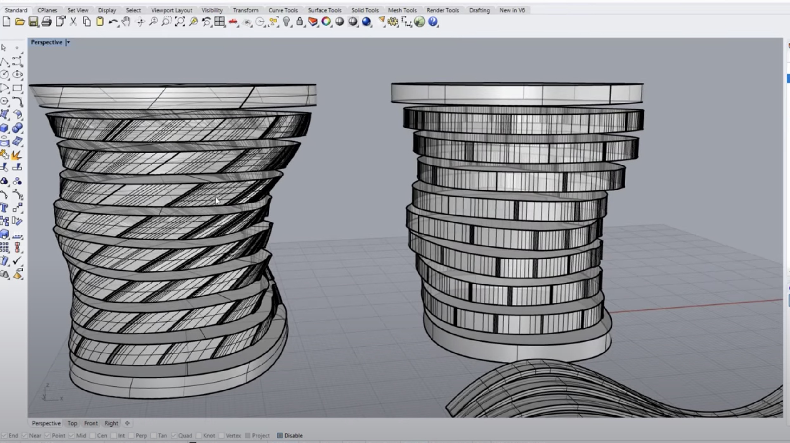

Tween Curve Candles!
Love to experiment with tween curves to make molds for candles. I'd use Rhino, Grasshopper definitions, 3d print and then cast in wax!
This kind of design could be prototyped with wax then scaled up to make lights or planters out of concrete, PLA or epoxy.